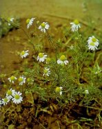
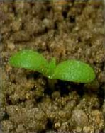
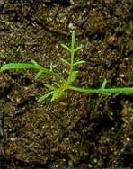

ORVOSI SZÉKFŰ
VIATRICARIA CHAMOMILLA L. (MATCH)
ÉLETFORMA: T2
TERMÉS: A kaszat majdnem hengeres. Hasi oldalon 2-3, oldalt
I-I lécszerűen kiemelkedő világos bordával. Hátán nincs borda. Talpa és
csúcskorongja aránylag nagy, ferde, világos. A sorközök szürkék vagy
szürkésbarnák. A kaszat hossza 0,8-1,2 mm, szélessége 0,5-0,6 mm. Ezermagtömege 0,06
g. Egy növény magprodukciója 5300. Csak a talaj felső 0,5 cm-es rétegéből tud
kicsírázni. Fő csírázási ideje ősszel és tavaszszal van.
CSIRANÖVÉNY: Sziklevelei elliptikusak vagy hosszúkás
elliptikusak, csúcsuk háromszögletes. Az első lomblevelek szálasak, egy vagy két
keskeny oldalcimpával.
KIFEJLETT NÖVÉNY: Egyéves, szára 15-40 cm magas,
felálló, ágas. Levelei 2-3-szor szárnyasan szeldeltek, keskeny, sertecsúcsú
szeletekkel. Virágzata fészek. Fészkei magányosak, kocsányosak. A vacok kúp alakú,
belül üres. A virág színe fehér.
ELTERJEDÉSE: Egész Európában elterjedt. A talajjal
szemben nem igényes, de elsősorban a mészszegény talajokat kedveli.
Gyógynövényként gyűjtjük.
 |
 |